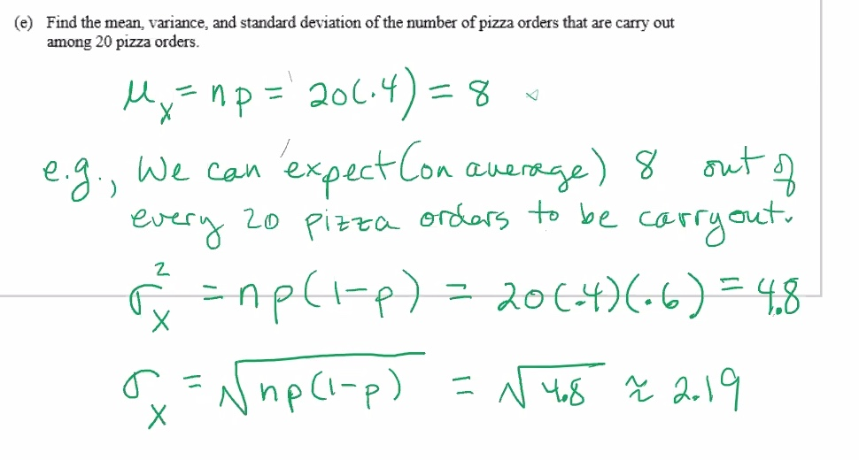
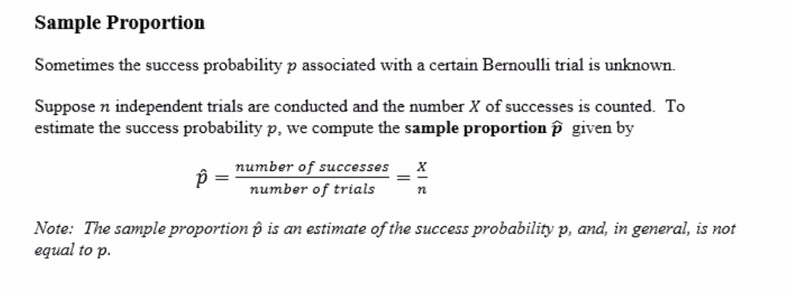
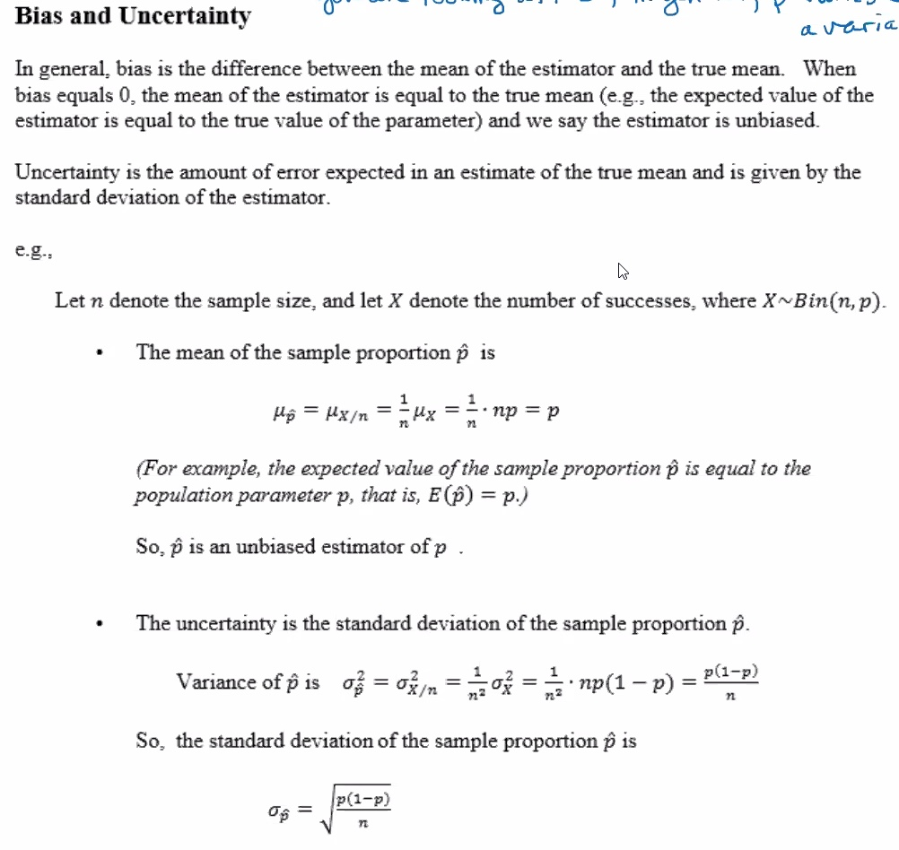
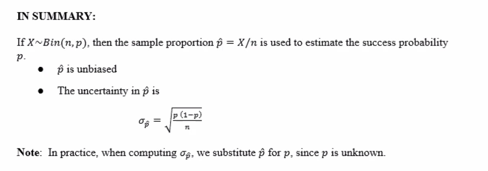
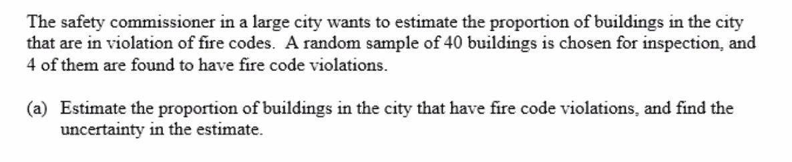
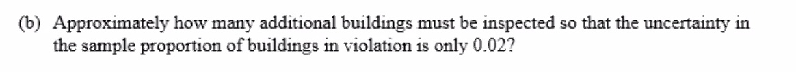
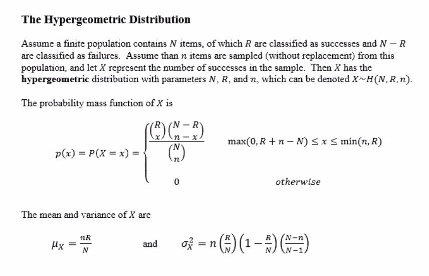

Note: The value of



We have a sample size of
Lets first compute the sample proportion:
Next we can calculate the uncertainty:

Find the sample size
So we need to subtract the 225 from the 40 already inspected. Therefore:
So we'd need to inspect 185 more buildings to get our uncertainty down to 2%. If our additional inspections happened to be a decimal, then we round up to the nearest whole number to guarantee we have the right uncertainty.
Before we get into 4.4, recall:
Consider a standard 52 card deck, there are 4 aces, 12 face cards, 13 hearts (all red), 13 diamonds (all red), 13 spades (all black), and 13 clubs (all black).
How many five-card hands are possible?
Of the different 5-card hands possible, how many would consist of all diamonds?
Of the different 5-card hands possible, how many consist of two face cards and three non-face cards?
What is the probability of obtaining a 5-card hand consisting of two face cards and three non-face cards?
